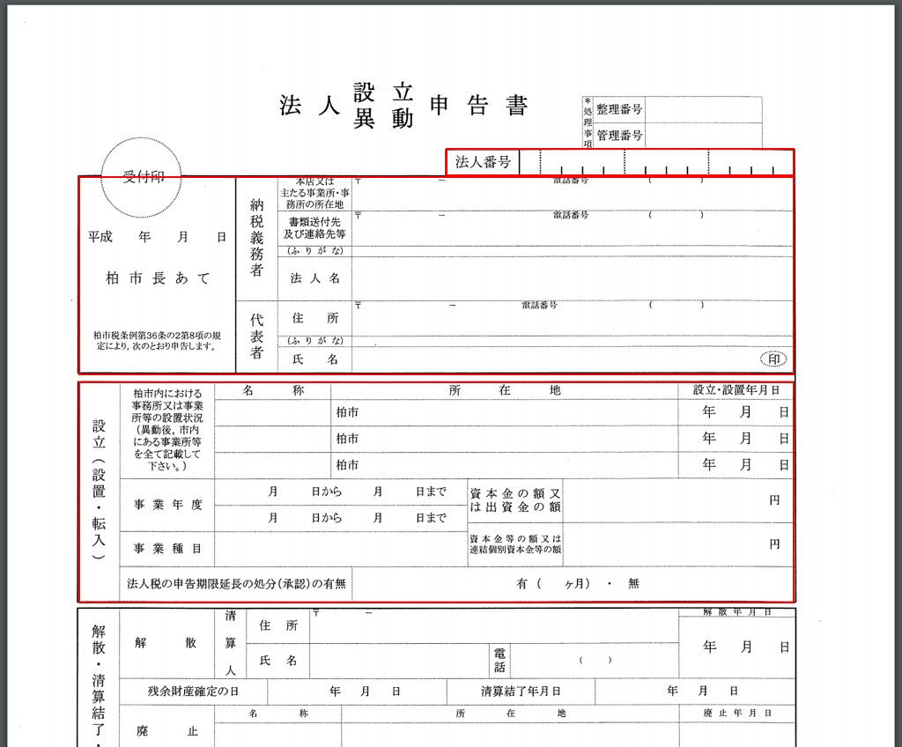

会社の設立手続きパート④です。
今回は、市役所の届出書類を例にとって届出書類作成の全体像を説明したいと思います。みなさんお住みの地域（地方自治体）によって少しずつ異なってはくると思いますが、大まかな内容は一緒だと思いますので、ぜひ参考にしてみてください。
Googleの検索で、「〇〇市役所（区役所） 法人設立届」みたいなワードで検索してみてください。私の場合は市役所のページが検索結果として表示され、そのページに行くと様々な申請様式がまとめられていました。（下図参照）
その様式の中に「法人設立異動申告書」というのがあり、このリンクをクリックすると、PDFのページに飛ぶことができました。このページを印刷して、下記赤枠部分を記載して提出すればOKです。
法人番号については、印鑑証明書には１２桁の数字しか記載されていませんが、この１２桁の数字から特定の計算方法で数字を一つ算出し、頭（左端）に付け加えるので、その点は気をつけましょう。（私のように右詰めで１２桁を書かないようにしてください。笑）
左端数字の算出式：9 ー[ { (偶数桁の和) × ２＋ (奇数桁の和) } ÷ ９の余り]
例えば、１２桁の数字が123,456,789,123の場合は、
９- [{(1+3+5+7+9+2) × 2 + (2+4+6+8+1+3)} ÷ 9 の余り]
= 9 - [{(27) × 2 + 24}÷ 9 の余り]
= 9 - [78 ÷ 9 の余り]
= 9 - 6
= 3
というようになります。（詳細を知りたい方は国税庁の法人番号公表サイトなどを参考になさってください。）
また、一つだけ提出時に気をつけていただきたいのですが、後々照会などがあった時に混乱しないためにもコピーを一部持って行き、受付印をそちらにも押していただいた上でそれは保管しておきましょう。受付の人もそのようなケースが多いらしく、自然な感じでコピー分にも印鑑を押してくれます。
すこし長くなってしまったので、税務事務所への届出作成は次回説明したいと思います。